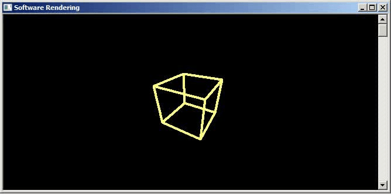
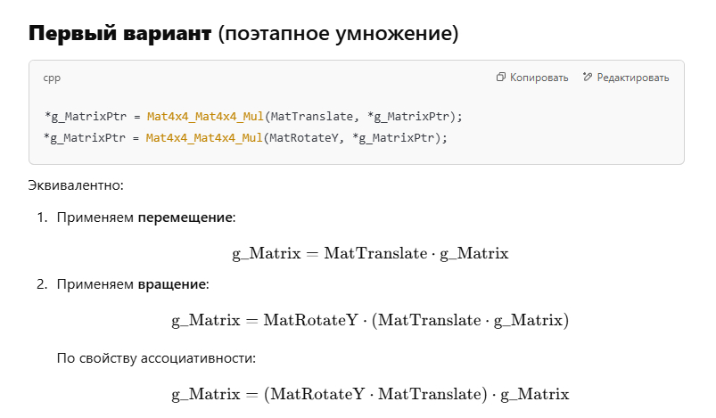
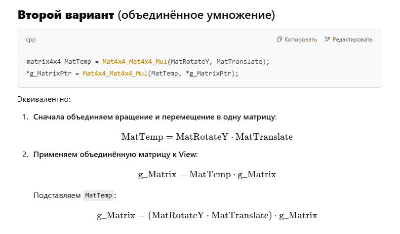

Добавим матрицу Вида
Загрузить архив с примерами ЗДЕСЬ.
Что может матрица Вида- матрица Вида размещает на сцене наблюдателя, т.е. камеру. Когда вы в какой нибудь компьютерной игре перемещаетесь по игровой сцене- это происходит благодаря матрице Вида.
В чем различие между матрицей Мира и матрицей Вида. Матрица Мира, или матрица Модели - эта матрица размещает модель на сцене. А матрица Вида размещает на сцене наблюдателя. Все как в реальном мире- есть мы, смотрим куда- то, видим что- то- модель или в реальной жизни реальный объект, который можно нарисовать в 3DS Max (пакет 3D моделирования) и разместить на сцене.
После умножения вершин модели на матрицу Мира все объекты размещены вокруг центра сцены. После умножения вершин модели на матрицу Вида центр сцены смещается в позицию где расположена камера (наблюдатель), и все координаты вершин модели расположены относительно нового центра сцены- позиции камеры (наблюдателя).
В предыдущих примерах мы программно отодвигали куб на +15 в глубину по Z, оставляли наблюдателя в позиции (0, 0, 0). В этом примере мы оставим модель куба в центре сцены (центр куба совпадает с центром сцены) а наблюдателя сместим на -15 единиц в глубину по Z, что бы продемонстрировать, что можно модель смещать на сцене, а можно на сцене смещать наблюдателя- и будет тот же визуальный результат на экране.
В примере кода vModelPos это позиция куба на сцене. vPos это позиция наблюдателя на сцене. Что бы вычислить матрицу Вида нам нужно начинать с вектора взляда vLook, и он равен vModelPos - vPos - то есть вектор взляда матрицы Вида смотрит на модель, так как если отнимать вектор b - a то результирующий вектор будет направлен к вектору b. Теперь когда у нас есть вектор взгляда vLook мы можем при помощи corss product (векторное произведение векторов) найти перпендикулярные вектора vUp и vRight, нормализовать эти три вектора и построить матрицу Вида.
Рассмотрим сцену, комнату в которой размещены книжная полка, журнальный столик и кресло. Все их этих трех объектов имеют свой локальный центр. Все их этих трех локальных центров размещены относительно центра мирового пространства- пространства сцены, пространства комнаты. Теперь представте, что вы- как наблюдатель, находитесь в каком либо месте этой комнаты. Следовательно, вы как наблюдатель имеете свои координаты в мировом пространстве сцены, в координатах комнаты, имеете свои координаты как и каждый объект в комнате, на сцене, в мировом пространстве сцены. Теперь вообразите, что у вас в руках современная цифровая кинокамера, и вы перемещаетесь по комнате, нашей сцене, и снимаете на кинокамеру все что есть в комнате, на сцене. У вас как у каждого объекта на сцене есть свой центр осей- локальный центр. В руках у вас кинокамера, которая размещена в локальном центе системы координат наблюдателя- ваших координатах. От вашего центра локального, от вашей кинокамеры- книжная полка теперь размещена на одном расстоянии, журнальный столик на другом, а кресло- на третьем расстоянии. Все объекты сцены, комнаты имеют теперь свои координаты размещения относительно вашей кинокамеры, вашего центра координат, центра координат наблюдателя. Можно смело сказать, что объекты находяться в пространстве камеры, пространстве вида, пространстве наблюдателя. Но наряду с этим, объекты так же находяться в мировом пространстве комнаты, сцены, и каждый из этих объектов комнаты находиться в своих собственных локальных координатах. Таким образом камера, наблюдатель, пространство вида- тоже находяться в мировых координатных осях. Камера имеет свои координаты на сцене, в комнате, в мировом пространстве. Координатная система камеры существует в координатной системе мирового пространства. Эти две координатные системы в конечном итоге существуют одна в другой, смотря с какой позиции смотреть на объекты сцены- с позиции центра системы координат сцены, или с позиции центра системы координат наблюдателя. Что же собой представляет система координат видового пространства. Видовое пространство по сути говоря – это такая же система координат как и локальное пространство, мировое пространство – оно имеет свои оси x,y,z. Пространство вида имеет свои оси координат и свой центр. Про пространство вида говорят что это «камера». Фактически так оно и есть. Есть комната со своим центром осей как в примере выше. Есть объекты этой комнаты со своими центрами осей каждый, и эти оси локальные размещены в одном пространстве комнаты, в системе координат комнаты. А наблюдатель или вы – находясь в этой комнате – представляете собой камеру. Каждый объект в мировом пространстве можно перемещать, вращать, масштабировать отдельно. Но так же вы можете сами перемещаться в мировом пространстве, вращаться вокруг этих объектов – и в некотором смысле масштабировать – когда камера приближаеться вплотную к объекту он становиться больше. Когда камера отдаляеться от объекта – объект становиться меньше. Фактически – пространство вида в трехмерной графике – это инвертированное пространство мира. То есть матрица вида- это инвертированная матрица мира. Локальное пространство объекта – это система координат, оси х,y,z в рамках которых данный объект создан дизайнером по графике. Мировое пространство – это такая же система координат со своими x,y,z в которой находяться все объекты сцены. Теперь – пространство вида – это третья система координат, относительно которой рассматриваються и центр координатной системы мира и центры координатных систем локальной системы координат каждого обеъкта сцены. Локальная координатная система каждого объекта сцены и координатная система пространства вида или камера, наблюдатель, существуют в одной координатной системе – координатной системе мирового пространства. Мы уже говорили как перемещать объекты сцены в мировом пространстве. А как же перемещать камеру, наблюдателя в мировом пространстве? Для этого надо перейти в новую систему координат – систему координат пространства вида. Пространство вида – это своя локальная система координат- но для камеры. В математике существует равенство, согласно которому мировые координаты всех объектов преобразуютсья из локальных путем умножения локальных координат объектов на матрицу мира:
V(world) = V(local) * W(world matrix)
Теперь если мировые координаты нашего объекта умножить на инвертированную матрицу мира – мы снова получим локальные координаты этого объекта:
V(local) = V(world) * W(inverse world matrix)
Объясню принцип инвертирования матрицы мира на практическом примере нашей воображаемой комнаты. Вы как наблюдатель делаете шаг вправо – то есть слева на право. Это значит что относительно системы координат камеры, наблюдателя внешний мир перемещаеться влево – то есть справа на лево - наоборот. Если камера делает поворот вправо – то создается впечатление что окружающий мир поворачиваеться влево, так же наоборот. Для этого и инвертируют матрицу мира, что бы получить матрицу вида. Если инвертировать обратно матрицу вида – мы получим ту же самую матрицу мира что и до этого, исходную. Теперь инвертируем матрицу мира что бы получить согласно нашей теории матрицу вида:
|RightVector.x UpVector.x LookVector.x 0| |RightVector.y UpVector.y LookVector.y 0| |RightVector.z UpVector.z LookVector.z 0| |-Pos * RightVector -Pos* UpVector -Pos* LookVector 1|
Первый столбец матрицы вида называется правый вектор. Правый вектор показывает как ориентирована локальная Х ось камеры в мировом пространстве. Второй столбец матрицы вида называется верхний вектор. Верхний вектор показывает, как ориентирована локальная Y ось камера. Третий столбец матрицы именуется вектор взгляда. Это единичный вектор описывает куда налблюдатель (камера) обращен, куда он смотрит, куда направлена локальная положительная Z ось камеры. Ось Z камеры (или матрицы Вида) всегда смотрит в положительном направлении, т.е. ось Z камеры всегда +Z. Эти три вектора должны быть взаимноперпендикулярны друг другу и быть векторами единичной длинны, то есть нормализованными векторами.
Данная матрица характеризует видовое пространство, видовые координатные оси, которые указывают как матрица мира расположена в видовом пространстве. То есть как координатные оси, координатная система мира расположена в координатной системе вида. Почему четвертая строка матрицы вида имеет отрицательные значения? А вспомните – наблюдатель находиться от мирового центра на 2 метра, но мировой центр находиться на -2 метра от центра осей наблюдателя, в локальных координатах камеры. Не забывайте – что пространство вида – это свои оси x,y,z которые мы перемещаем и вращаем (перемещаем и вращаем камеру) в мировом пространстве. Почему вектор позиции Pos умножаеться на вектора правый, верхний и вектор взгляда – в данном случае мы просто определяем что позиция камеры по x расположена по направлению нормали RightVector на -Pos мировых единиц по осям x,y,z. Это координаты начала вектора RightVector в мировом пространстве. Это значит что плоскость нормали RightVector расположена в мировом пространстве на –Pos единиц по оси x. То есть производя умножение -Pos*RightVector мы смещаем позицию –Pos в новую позицию по направлению вектора RightVector который находится в начале координатной системы мира. А новая позиция это размещение камеры. Для того что бы лучше понять, как происходит расчет позиции камеры, давайте вообразим что ось X создает плоскость YZ, ось Y создает плоскость XZ, ось Z создает плоскость YX. То есть для оси X мы проведем плоскость через оси YZ, для оси Y мы проведем плоскость через оси XZ, для оси Z мы проведем плоскость через оси YX. И у каждой из этих плоскостей есть номали. Для плоскости YZ нормаль (1,0,0), для плоскости XZ номаль (0,1,0), для плоскости YX номаль (0,0,1). Пусть эти нормали будут наши вектора матрицы вида RightVec, UpVec, LookVec. Теперь если мы умножим каждую из этих нормалей на вектор- мы просто переместим вектор в новую позицию 3D пространства вдоль каждой из этих нормалей. Это и есть принцип расчета позиции камеры в 3D пространстве.
Как уже упоминалось, мы можем сдвинуть модель куба в глубину от зрителя на +15 единиц по оси Z, причем зритель остаеться в позиции (0, 0, 0) центр экрана. А так же мы можем модель куба оставить в позиции центра экрана (0, 0, 0) и сдвинуть зрителя (наблюдателя) на -15 единиц по оси Z от куба. В программе ниже этим и занимаеться матрица вида- мы отодвигаемся от куба на -15 единиц по оси Z, а сам куб не меняет своей позиции на сцене и центр оси куба освпадает с центром оси координат сцены.
С чего начинаеться расчет матрицы вида? Первое нужно выяснить куда смотрит камера, наблюдатель (или зритель). Как это сделать. Есть поизиция на сцене куда смотрит камера, и есть позиция на сцене самой камеры. От позиции куда смотрит камера нужно отнять позицию самой камеры, в результате мы получим вектор который указывает куда смотрит камера, и этот вектор нужно нормализовать. Как мы знаем из математики, если вектор a отнимать от вектора b, то есть b - a, в векторном виде, то результирующий вектор будет направлен к вектору b, к тому вектору от которого вычитаем. Для сравнения, если складывать два вектора, например b + a, то результирующий вектор будет направлен к вектору a, ко второму слагаемому. Итак у нас есть вектор куда смотрит камера, он называеться вектор взгляда или сокраещнно vLook. Теперь используя cross product, то есть векторное произведение двух векторов мы можем вычилить остальные два вектора- вектор vUp ивектор vRight - они необходимы для построения матирцы Вида.
Фактически что бы построить матрицу Вида нам нужно четыре вектора vLook, vRigth, vUp, vPos - последний вектор это позиция камеры. Эти три вектора vLook, vRight, vUp перпендикулярны между собой. Как уже говорилось, сначала нужно определить куда смотрит камера- это вектор взлгяда. Когда мы отталкиваясь куда смотрит вектор vLook при помощи cross product вычисляем остальные два вектора vRight и vUp, мы должны эти три получившиеся векторы нормализовать, и переместить в позицию камеры умножив при помощи скалярного произведения векторов каждый из трех векторов vLook, vRight, vUp на vPos (и взять результат с отрицательным знаком). Когда мы получим все эти значения- три вектора vLook, vRight, vUp и три float значения -(vPos*vLook), -(vPos*vRight), -(vPos*vUp) - используя эти значения мы заполняем все 16 элементов матрицы Вида. Устройство матрицы Вида показано ниже.
matrix4x4 mxView = {
vRight.x, vUp.x, vLook.x, 0.0,
vRight.y, vUp.y, vLook.y, 0.0,
vRight.z, vUp.z, vLook.z, 0.0,
-(vRight*vPos), -(vUp*vPos), -(vLook*vPos), 1.0 };
Что бы рассчитать матрицу вида, сначала нужно подготовить входящие данные, что бы заполнить нужную матрицу. Когда мы подготовили данные, и потом заполнили этими данными матрицу- то каждую вершину модели мы будем умножать на эту матрицу. Как уже говорилось у куба 8м вершин в нашем примере, каждую из 8ми вершин куба мы будем умножать на матрицу, и это сводится к простому умножению вектора x,y,z на матрицу 4х4. Матрица Вида рассчитывается так:
typedef float matrix4x4[4][4];
vertex3 vRight = { 1.0, 0.0, 0.0 };
vertex3 vUp = { 0.0, 1.0, 0.0 };
//позиция камеры на высоте 10 единиц по Y и -15 единиц в глубину по Z.
vertex3 vPos = { 0.0, 10.0, -15.0 };
//камера смотрит в центр мировых координат (инвертируем вектор)
vertex3 vLook = { -1.0 * vPos.x, -1.0 * vPos.y, -1.0 * vPos.z };
vLook = Vec3Normalize(vLook);
vUp = Vec3Cross(vLook, vRight);
vUp = Vec3Normalize(vUp);
vRight = Vec3Cross(vUp, vLook);
vRight = Vec3Normalize(vRight);
float xp = - Vec3Dot(vPos, vRight);
float yp = - Vec3Dot(vPos, vUp);
float zp = - Vec3Dot(vPos, vLook);
matrix4x4 mView = {
vRight.x, vUp.x, vLook.x, 0.0,
vRight.y, vUp.y, vLook.y, 0.0,
vRight.z, vUp.z, vLook.z, 0.0,
xp, yp, zp, 1.0 };
Результат работа программы с добавленным кодом умножения вершин на матрицу Мира и Вида показан на анимации ниже.
У нас есть расчет матрицы Вида:
//MATRIX VIEW CALCULATION
vector3 VecRight = { 1.0f, 0.0f, 0.0 };
vector3 VecUp = { 0.0f, 1.0f, 0.0f };
vector3 VecCamPos = { 0.0f, 0.0f, -25.0f };
vector3 VecLook = { -1.0f * VecCamPos.x, -1.0f * VecCamPos.y, -1.0f * VecCamPos.z };
VecLook = Vec3_Normalize(VecLook);
VecUp = Vec3_Cross(VecLook, VecRight);
VecUp = Vec3_Normalize(VecUp);
VecRight = Vec3_Cross(VecUp, VecLook);
VecRight = Vec3_Normalize(VecRight);
float Px = -Vec3_Dot(VecCamPos, VecRight);
float Py = -Vec3_Dot(VecCamPos, VecUp);
float Pz = -Vec3_Dot(VecCamPos, VecLook);
matrix4x4 MatView = {
VecRight.x, VecUp.x, VecLook.x, 0.0f,
VecRight.y, VecUp.y, VecLook.y, 0.0f,
VecRight.z, VecUp.z, VecLook.z, 0.0f,
Px, Py, Pz, 1.0f };
Зачем и что делает этот код ниже:
float Px = -Vec3_Dot(VecCamPos, VecRight); float Py = -Vec3_Dot(VecCamPos, VecUp); float Pz = -Vec3_Dot(VecCamPos, VecLook);
Почему нельзя просто написать:
matrix4x4 MatView = {
VecRight.x, VecUp.x, VecLook.x, 0.0f,
VecRight.y, VecUp.y, VecLook.y, 0.0f,
VecRight.z, VecUp.z, VecLook.z, 0.0f,
VecCamPos.x, VecCamPos.y, VecCamPos.z, 1.0f };
Этот блок кода:
float Px = -Vec3_Dot(VecCamPos, VecRight); float Py = -Vec3_Dot(VecCamPos, VecUp); float Pz = -Vec3_Dot(VecCamPos, VecLook);
Отвечает за вычисление позиции камеры относительно её новой ориентации (то есть смещения в системе координат камеры) и используется для корректного переноса сцены в нужное положение при создании матрицы вида.
Объяснение строк кода
1. Px, Py, и Pz: Эти переменные представляют смещения по каждой из осей новой системы координат камеры после её поворота.
2. Vec3_Dot (Скалярное произведение): Функция Vec3_Dot используется для вычисления проекции вектора позиции VecPos на каждый из направляющих векторов (VecRight, VecUp, и VecLook). В результате скалярное произведение возвращает величину компоненты VecPos вдоль каждого направления системы координат камеры.
3. Значение знака - : Знак минус нужен для того, чтобы эффективно "перенести" мировые координаты в систему координат камеры. Это достигается инверсией позиции камеры, которая, по сути, создаёт матрицу сдвига, компенсируя её положение в мировой системе координат.
Зачем нужны Px, Py, Pz в MatView:
Когда вы собираете матрицу MatView, Px, Py, и Pz занимают последнюю строку в матрице и позволяют корректно перенести сцену в систему координат камеры. Это "смещение" гарантирует, что камера будет работать так, как будто она находится в центре координат (0, 0, 0) и "смотрит" вдоль оси Z, что и нужно для правильной проекции сцены на экран.
Использование VecCamPos.x, VecCamPos.y, и VecCamPos.z напрямую в матрице MatView, вместо расчетов с помощью скалярного произведения, приведет к неверному позиционированию камеры. Давайте разберем, почему это так.
Почему нужны значения Px, Py, и Pz.
Когда вы строите матрицу вида, вы не просто указываете позицию и ориентацию камеры, а переносите мировые координаты в новую систему координат камеры. Это означает, что нужно не просто выставить координаты VecPos, а "перенести" их в новую систему, где камера считается неподвижной в (0, 0, 0), а мир вращается и смещается вокруг неё.
Вот почему мы используем формулы со скалярным произведением:
float Px = -Vec3_Dot(VecCamPos, VecRight); float Py = -Vec3_Dot(VecCamPos, VecUp); float Pz = -Vec3_Dot(VecCamPos, VecLook);
Каждое из этих выражений, вычисляемое через Vec3_Dot, определяет положение камеры относительно осей камеры (VecRight, VecUp, и VecLook). Значения Px, Py, и Pz обеспечивают корректное смещение всей сцены так, что положение камеры будет фактически находиться в точке (0, 0, 0) в её собственной системе координат, а весь мир "сдвигается" относительно камеры.
Что произойдет, если использовать VecPos напрямую.
Если вы используете VecCamPos.x, VecCamPos.y, и VecCamPos.z напрямую в последней строке MatView:
matrix4x4 MatView = {
VecRight.x, VecUp.x, VecLook.x, 0.0f,
VecRight.y, VecUp.y, VecLook.y, 0.0f,
VecRight.z, VecUp.z, VecLook.z, 0.0f,
VecCamPos.x, VecCamPos.y, VecCamPos.z, 1.0f
};
То вы просто устанавливаете положение камеры в мировой системе координат без учёта ориентации и направления взгляда камеры. В результате, камера не будет правильно фиксировать сцену — вместо этого получится эффект, будто вы просто добавили вектор VecPos, не синхронизированный с направлением взгляда.
Но тут вопрос- мы уже добавили в матрицу куда смотрит камера - мы добавили VecRight, VecUp, VecLook зачем еще их умножать на позицию камеры?
Действительно, в матрице вида уже учтено направление камеры через VecRight, VecUp, и VecLook. Однако, скалярное произведение позиции камеры с этими направлениями выполняет ключевую задачу — корректно позиционирует мировые координаты относительно камеры, чтобы камера воспринималась как неподвижная точка в (0, 0, 0), а сцена сдвигалась вокруг неё.
Давайте разберем, почему этого не избежать:
В чем суть скалярного произведения с позицией.
Когда мы умножаем VecCamPos на VecRight, VecUp, и VecLook с помощью скалярного произведения, это не просто дополнительное действие. Оно определяет, как позиция камеры проецируется на новые оси координат в её системе, где VecRight, VecUp, и VecLook теперь выполняют роль базиса (новых координатных осей). Этот шаг:
1. Переносит мир в систему координат камеры: Проекция позиции на оси камеры (через VecRight, VecUp, VecLook) определяет, насколько нужно сдвинуть сцену вдоль каждой из этих осей, чтобы камера казалась фиксированной.
2. Обеспечивает согласование с направлением: Это не просто добавление, а вычисление того, как сдвинуть мир относительно камеры, учитывая её ориентацию и поворот.
Почему не работает прямое добавление VecCamPos.
Если использовать VecCamPos напрямую, без проекции, как в вашем примере, то матрица не будет учитывать относительное смещение сцены в зависимости от направлений камеры. В результате, камера не будет восприниматься как находящаяся в (0, 0, 0), а её положение и ориентация не будут корректно передаваться сцене — всё, что находится "впереди" или "сзади" камеры, будет отображаться некорректно.
Пример наглядного представления.
Представьте, что VecRight, VecUp, и VecLook образуют новый ориентированный куб вокруг камеры. Чтобы правильно "поместить" этот куб относительно сцены, важно не просто сместить его на VecCamPos, а узнать, насколько каждый из его ориентированных векторов влияет на положение объектов вокруг. Это и обеспечивает проекция VecCamPos на направления VecRight, VecUp, и VecLook.
У нас есть вычисления матрицы Вида:
float Px = -Vec3_Dot(VecCamPos, VecRight);
float Py = -Vec3_Dot(VecCamPos, VecUp);
float Pz = -Vec3_Dot(VecCamPos, VecLook);
matrix4x4 MatView = {
VecRight.x, VecUp.x, VecLook.x, 0.0f,
VecRight.y, VecUp.y, VecLook.y, 0.0f,
VecRight.z, VecUp.z, VecLook.z, 0.0f,
Px, Py, Pz, 1.0f };
То есть получается у нас есть три вектора: VecRight, VecUp, VecLook. Сначала при вычислении позиции камеры Px, Py, Pz мы скалярно умножаем позицию VecPos на эти три вектора.
Далее у нас есть вершина: VecModelPos.
Мы эту вершину умножаем на эту матрицу вида:
VecModelTransformed = Vec3_Mat4x4_Mul(VecModelPos, MatView);
И внутри этой функции Vec3_Mat4x4_Mul() происходят те же три скалярных умножения что и в случае с позицией матрицы вида:
float PMx = Vec3_Dot(VecModelPos, VecRight) + Px; float PMy = Vec3_Dot(VecModelPos, VecUp) + Py; float PMz = Vec3_Dot(VecModelPos, VecLook) + Pz;
Давайте разберем, как именно это работает:
1. Вычисление Px, Py, Pz для камеры: При создании матрицы вида MatView вы вычисляете значения Px, Py, и Pz, выполняя скалярные произведения позиции камеры VecPos с тремя ориентационными векторами (VecRight, VecUp, и VecLook). Это позволяет выразить положение камеры относительно её собственной системы координат, что перемещает мир так, чтобы камера оставалась неподвижной.
2. Преобразование вершины VecModelPos в системе координат камеры: Когда вы умножаете вершину модели VecModelPos на матрицу MatView через Vec3_Mat4x4_Mul(), происходит подобное скалярное умножение, чтобы выразить позицию VecModelPos в координатах камеры. Это включает добавление смещений Px, Py, и Pz для правильного учета положения камеры в сцене.
3. Результирующие компоненты PMx, PMy, и PMz: Внутри Vec3_Mat4x4_Mul() вычисляются новые координаты вершины VecModelTransformed:
float PMx = Vec3_Dot(VecModelPos, VecRight) + Px; float PMy = Vec3_Dot(VecModelPos, VecUp) + Py; float PMz = Vec3_Dot(VecModelPos, VecLook) + Pz;
Эти операции эквивалентны тем, что применяются к позиции камеры VecPos, но теперь они учитывают смещение Px, Py, Pz, чтобы передвинуть вершину модели в систему координат камеры.
Таким образом операции над вершинами повторяют те же вычисления, что и для Px, Py, и Pz, — только теперь они применяются к VecModelPos с учётом смещения камеры в её системе координат.
То есть когда мы умножаем вершину на матрицу Вида, что происходит:
float PMx = Vec3_Dot(VecModelPos, VecRight) + Px; float PMy = Vec3_Dot(VecModelPos, VecUp) + Py; float PMz = Vec3_Dot(VecModelPos, VecLook) + Pz;
Вот эти компонены сложения:
Vec3_Dot(VecModelPos, VecRight) Vec3_Dot(VecModelPos, VecUp) Vec3_Dot(VecModelPos, VecLook)
Отвечают за поворот вершины.
А вот эти компоненты сложения:
Px, Py, Pz
Отвечают за размещение (позицию) вершины в координатах камеры.
Разберем подробнее:
1. Компоненты поворота:
Vec3_Dot(VecModelPos, VecRight) Vec3_Dot(VecModelPos, VecUp) Vec3_Dot(VecModelPos, VecLook)
Эти выражения отвечают за вращение вершины VecModelPos в системе координат камеры. Они проецируют вершину на ориентационные векторы камеры (VecRight, VecUp, и VecLook), тем самым "поворот" вершины приводит её в ту же ориентацию, что и камера.
2. Компоненты смещения:
Px, Py, Pz
Эти значения (Px, Py, и Pz), рассчитанные из позиции камеры VecPos, добавляются к проекциям и смещают вершину в системе координат камеры, учитывая её положение. Это перемещает вершину так, чтобы камера воспринималась как неподвижная в (0, 0, 0), а сцена (вершина) — правильно сдвинутая и повернутая вокруг неё.
Итог:
- Проекции на VecRight, VecUp, и VecLook — выполняют поворот вершины.
- Добавление Px, Py, и Pz — отвечает за смещение вершины относительно камеры.
Так поворот и позиционирование работают в этих двух частях выражения.
Например у нас есть умножение для определения матрицы вида:
float Px = -Vec3_Dot(VecCamPos, VecRight); float Py = -Vec3_Dot(VecCamPos, VecUp); float Pz = -Vec3_Dot(VecCamPos, VecLook);
До умножения VecCamPos показывает позицию камеры в мировых координатах, т.е. позиция относительно (0,0,0) мировых координат (начала мировых координат).
После умножения Px, Py, Pz показывают как позиция (0,0,0) мировых координат (начала мировых координат) размещена относительно камеры.
В начале:
- VecCamPos представляет собой положение камеры в мировых координатах — то есть, её позицию относительно начала мировой системы координат (0, 0, 0).
После вычислений:
- Px, Py, и Pz определяют, где будет находиться начало мировой системы координат (0, 0, 0) относительно камеры, когда камера считается зафиксированной в своей системе координат.
Таким образом, можно сказать, что Px, Py, и Pz смещают мировые координаты так, чтобы начало (0, 0, 0) мира соответствовало позиции камеры в её собственной системе координат. Теперь камера воспринимается как центр (0, 0, 0) в своей системе, и вся сцена корректно позиционируется и ориентируется относительно этого нового центра.
К примеру у нас есть:
vector3 VecRight = { 1.0f, 0.0f, 0.0f };
vector3 VecUp = { 0.0f, 1.0f, 0.0f };
vector3 VecLook = { 0.0f, 0.0f, 1.0f };
vector3 VecCamPos = { 0.0f, 0.0f, -20.0f };
VecCamPos - это координаты камеры в мировом пространстве.
Мы выполняем скалярное умножение:
float Px = -Vec3_Dot(VecCamPos, VecRight); float Py = -Vec3_Dot(VecCamPos, VecUp); float Pz = -Vec3_Dot(VecCamPos, VecLook);
После умножения Px = 0.0f, Py = 0.0f, Pz = -20.0f - это координаты начала мировой системы (0,0,0) в координатах камеры.
Почему когда мы формируем матрицу Вида мы в скалярном умножении добавляем знак минус, а когда умножаем матрицу Вида на вершину модели то знак минус не ставим?
Знак минус при вычислении элементов Px, Py, и Pz в матрице вида связан с тем, что матрица вида по сути описывает обратное преобразование камеры. Давайте разберем это подробнее.
1. Зачем нужен знак минус при формировании матрицы вида
Когда вы вычисляете элементы Px, Py, Pz как:
float Px = -Vec3_Dot(VecCamPos, VecRight); float Py = -Vec3_Dot(VecCamPos, VecUp); float Pz = -Vec3_Dot(VecCamPos, VecLook);
Знак минус здесь используется, потому что камера в мировой системе координат изначально расположена в точке VecCamPos. Чтобы переместить мировые координаты так, будто камера находится в (0, 0, 0), необходимо сместить мир в противоположную сторону от позиции камеры. Поэтому мы используем отрицательное значение позиции камеры, чтобы сцена правильно "сдвинулась" относительно камеры и создала эффект её неподвижности.
2. Почему знак минус не нужен при умножении матрицы вида на вершину модели.
Когда вы применяете матрицу вида к вершине модели, например:
VecModelTransformed = Vec3_Mat4x4_Mul(VecModelPos, MatView);
Матрица вида уже содержит отрицательное смещение в элементах Px, Py, и Pz. Это значит, что вершины модели будут корректно смещены относительно камеры с учётом этого обратного смещения.
При умножении на матрицу вида вы просто применяете это заранее рассчитанное смещение (которое уже включает знак минус) к каждой вершине. Если бы вы добавили ещё один знак минус при умножении, то вы бы "вернули" смещение, и камера снова переместилась бы в позицию VecCamPos, что привело бы к неправильному результату.
В итоге:
- Минус нужен только один раз — когда вы рассчитываете Px, Py, и Pz при формировании матрицы вида.
- При последующем использовании матрицы вида этот минус уже учтен в значениях Px, Py, и Pz, поэтому его повторно добавлять не нужно.
Почему поворот при умножении вершины на матрицу Мира в одну сторону, а поворот при умножении на матрицу Вида в другую - противоположную. Это совпадает с обычным представлением - вы наблюдатель (матрица Вида) поворачиваетесь вправо, но мир поворачивается влево относительно вас. Почему?
matrix4x4 mxWorld = {
vRight.x, vRight.y, vRight.z, 0.0,
vUp.x, vUp.y, vUp.z, 0.0,
vLook.x, vLook.y, vLook.z, 0.0,
0.0f, 0.0f, 0.0f, 1.0 };
matrix4x4 mxView = {
vRight.x, vUp.x, vLook.x, 0.0,
vRight.y, vUp.y, vLook.y, 0.0,
vRight.z, vUp.z, vLook.z, 0.0,
0.0f, 0.0f, 0.0f, 1.0 };
Это за счет транспонирования матрицы Мира - в матрице Мира vRight, vUp, vLook лежат по строкам, а в матрице Вида vRight, vUp, vLook лежат по столбцам, поэтому такой эффект при повороте. Как уже говорилось элемент поворота лежит в секции 3х3 матрицы, а элемент перемещение в четвертой строке (при row major матрицах).
Полностью программа с использованием матрицы вращения по оси Y, матрицы Мира и Вида показана ниже. Загрузить проект /src/01.008-mx_view/Cube_RotateY_mxView1.
Проект где z делиться на (Rc.bottom / 2.0f) - это упрощает преобразование в экранные координаты. Загрузить проект /src/01.008-mx_view/Cube_RotateY_mxView2.
Посмотрите как при помощи стека матриц на сцене можно разместить два куба одновременно. Загрузить проект /src/01.008-mx_view/Cube_RotateY_mxView3_MatStack.
Еще один пример матрицы вида и другой математический подход- сначала вычитаются мировые координаты объекта и камеры, а затем умножение на матрицу вида 3x3 - без расчета четвертой строки матрицы вида. Загрузить проект /src/01.008-mx_view/Cube_RotateY_mxView4.
Почему в примере /src/01.008-mx_view/Cube_RotateY_mxView2 мы делаем так - сначала применяем перемещение, потом вращение:
g_MatrixPtr -> Mat View *g_MatrixPtr = Mat4x4_Mat4x4_Mul(MatTranslate, *g_MatrixPtr); *g_MatrixPtr = Mat4x4_Mat4x4_Mul(MatRotateY, *g_MatrixPtr);
Хотя до этого мы делали так - сначала применяли вращение, потом перемещение:
g_MatrixPtr -> Mat View matrix4x4 MatTemp = Mat4x4_Mat4x4_Mul(MatRotateY, MatTranslate); *g_MatrixPtr = Mat4x4_Mat4x4_Mul(MatTemp, *g_MatrixPtr);
Ответ показан ниже на скриншотах.
 #define _WIN32_WINNT 0x0500 #include <windows.h> #include <#include < HWND hWnd; struct vertex { float x,y,z; }; enum { A, B, C, D, E, F, G, H }; vertex vert_buff[8] = { -4.0, -4.0, -4.0, //A 4.0, -4.0, -4.0, //B -4.0, 4.0, -4.0, //C 4.0, 4.0, -4.0, //D -4.0, -4.0, 4.0, //E 4.0, -4.0, 4.0, //F -4.0, 4.0, 4.0, //G 4.0, 4.0, 4.0 }; //H vertex vert_buff_transformed[8]; /* FONT SIDE BACK SIDE C - D G - H | | | | A - B E - F */ unsigned int index_buff[24] = { //LINES CONNECT FRONT SIDE VERTICES A, B, B, D, D, C, C, A, //LINES CONNECT BACK SIDE VERTICES E, F, F, H, H, G, G, E, //LINES CONNECT FRONT AND BACK SIDE A, E, B, F, D, H, C, G }; typedef float matrix4x4[4][4]; vertex Vec3_Mat4x4_Mul(vertex v, matrix4x4 m) { vertex t; t.x = v.x * m[0][0] + v.y * m[1][0] + v.z * m[2][0] + m[3][0]; t.y = v.x * m[0][1] + v.y * m[1][1] + v.z * m[2][1] + m[3][1]; t.z = v.x * m[0][2] + v.y * m[1][2] + v.z * m[2][2] + m[3][2]; return t; } float Vec3_Dot(vertex v1, vertex v2) { return v1.x * v2.x + v1.y * v2.y + v1.z * v2.z; } vertex Vec3_Normalize(vertex v) { float len = sqrtf( (v.x * v.x) + (v.y * v.y) + (v.z * v.z) ); vertex t = { v.x / len, v.y / len, v.z / len }; return t; } vertex Vec3_Cross(vertex v1, vertex v2) { vertex t = { v1.y * v2.z - v1.z * v2.y, v1.z * v2.x - v1.x * v2.z, v1.x * v2.y - v1.y * v2.x }; return t; } void Draw_Cube() { RECT rc; GetClientRect(hWnd, &rc); static float angle = 0.0; matrix4x4 mxRotateY = { cosf(angle), 0.0, -sinf(angle), 0.0, 0.0, 1.0, 0.0, 0.0, sinf(angle), 0.0, cosf(angle), 0.0, 0.0, 0.0, 0.0, 1.0 }; angle = angle + (3.1415926f / 100.0f); if(angle > (3.1415926f * 2.0f) ) angle = 0.0f; vertex vModelPos = { 0.0, 0.0, 0.0 }; //MATRIX WORLD matrix4x4 mxWorld = { 1.0f, 0.0, 0.0, 0.0, 0.0, 1.0f, 0.0, 0.0, 0.0, 0.0, 1.0f, 0.0, vModelPos.x, vModelPos.y, vModelPos.z, 1.0f }; //MATRIX VIEW CALCULATION vertex vRight = { 1.0f, 0.0f, 0.0 }; vertex vUp = { 0.0f, 1.0f, 0.0f }; vertex vPos = { 0.0f, 10.0f, -15.0f }; vertex vLook = { -1.0f * vPos.x, -1.0f * vPos.y, -1.0f * vPos.z }; vLook = Vec3_Normalize(vLook); vUp = Vec3_Cross(vLook, vRight); vUp = Vec3_Normalize(vUp); vRight = Vec3_Cross(vUp, vLook); vRight = Vec3_Normalize(vRight); float xp = -Vec3_Dot(vPos, vRight); float yp = -Vec3_Dot(vPos, vUp); float zp = -Vec3_Dot(vPos, vLook); matrix4x4 mxView = { vRight.x, vUp.x, vLook.x, 0.0, vRight.y, vUp.y, vLook.y, 0.0, vRight.z, vUp.z, vLook.z, 0.0, xp, yp, zp, 1.0 }; for ( int i = 0; i < 8; i++ ) { vertex v = Vec3_Mat4x4_Mul(vert_buff[i], mxRotateY); v = Vec3_Mat4x4_Mul(v, mxWorld); v = Vec3_Mat4x4_Mul(v, mxView); v.x = v.x / v.z; v.y = v.y / v.z; v.x = v.x / ( (float) rc.right / (float) rc.bottom ); v.x = v.x * rc.right / 2.0f + rc.right / 2.0f; v.y =-v.y * rc.bottom / 2.0f + rc.bottom / 2.0f; vert_buff_transformed[i] = v; } HDC hDC = GetDC(hWnd); HBRUSH hBrush = CreateSolidBrush( RGB ( 0, 0, 0) ); HBRUSH hOldBrush = (HBRUSH) SelectObject(hDC, hBrush); Rectangle(hDC, 0, 0, rc.right, rc.bottom); HPEN hPen = CreatePen(PS_SOLID, 4, RGB( 255, 255, 127 ) ); HPEN hOldPen = (HPEN) SelectObject(hDC, hPen); for ( int i = 0; i < 12; i++ ) { vertex v1 = vert_buff_transformed[ index_buff[ i * 2 ] ]; vertex v2 = vert_buff_transformed[ index_buff[ i * 2 + 1 ] ]; MoveToEx(hDC, (int)v1.x, (int)v1.y, NULL); LineTo(hDC, (int)v2.x, (int)v2.y); } SelectObject(hDC, hOldBrush); DeleteObject(hBrush); SelectObject(hDC, hOldPen); DeleteObject(hPen); ReleaseDC(hWnd, hDC); Sleep(25); } int main () { hWnd = GetConsoleWindow(); while ( !_kbhit() ) { Draw_Cube(); } return 0; }